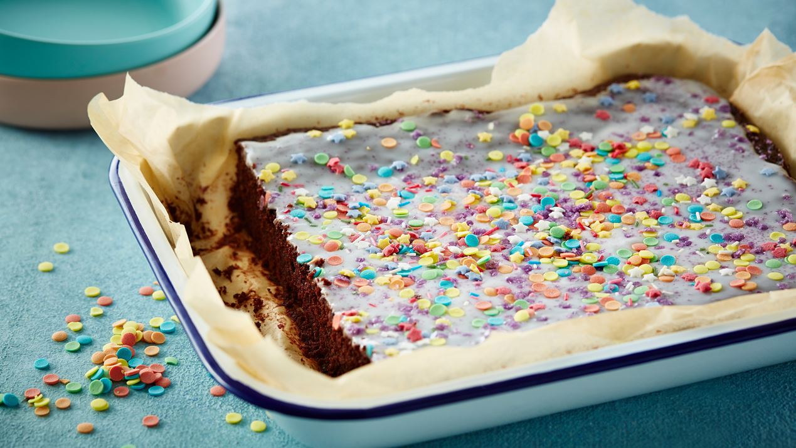

Opskrift til chokoladekage

Ingredienser
- 350 g sukker
- 175 g hvedemel
- 4 spsk kakaopulver
- 3 tsk vanijlepulver
- 3 tsk bagepulver
- 250 g smør - smeltet
- 3 æg
- 2 dl kogende vand
Ingredienser til glasur
Kagens fremgangsmåde
- Bland sukker, mel, kakao, vaniljesukker og bagepulver sammen.
- Rør smør og æg i de tørre ingredienser og vend til sidst det kogende vand i dejen - dejen bliver ret tynd.
- Hæld dejen i en lille bradepande beklædt med bagepapir (ca. 25 x 30 cm).
- Bag kagen nederst i ovnen.
- Lad kagen afkøle i bradepanden.
Bag nu dejen i ca. 35 min. ved 175° - traditionel ovn.
Glasurens fremgangsmåde
- Rør flormelis og vand sammen og fordel glasuren på den afkølede kage.
- Server chokoladekagen direkte fra bradepanden.